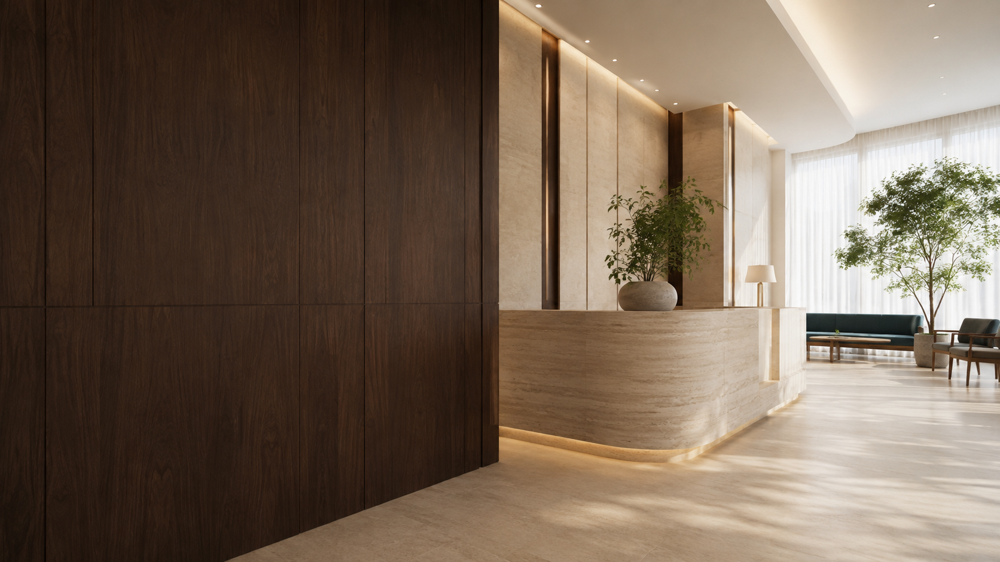
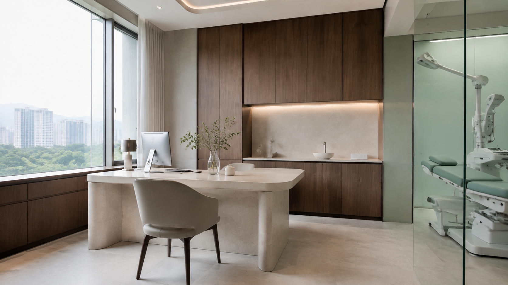

A BETTER DAY, A HEALTHIER YOU
편안한 진료가
일상의 미소로.
조금 더 가까이, 조금 더 세심하게.
당신의 건강한 일상을 함께 생각합니다.
한 사람의 이야기에 귀 기울이고,
이해하기 쉬운 설명으로 진료의 방향을 함께 찾습니다.
스마일이 생각하는 좋은 진료의 시작입니다.

THOUGHTFUL CARE, ALWAYS.어떤 하루를 보내고 있는지,
무엇이 가장 불편했는지.
당신의 일상을 이해하는 것에서
우리의 진료는 시작됩니다.
차근차근 설명하고 함께 고민하며
건강한 내일을 향해 걸어갑니다.
혼자 고민했던 작은 불편함도
이제 편안하게 이야기하세요.
증상과 생활 습관을 함께 살피며
개인에게 맞는 진료 방향을 찾아갑니다.

01 / PERSONALIZED CARE연령과 생활 방식에 따라 달라지는 건강 고민.
지금의 나에게 필요한 관리를 함께 생각합니다.
한 번의 만남에서 그치지 않고
일상으로 이어지는 세심한 관심을 지향합니다.
익숙했던 불편함을 편안한 일상으로.
스마일의 진료 분야를 살펴보세요.
진료실 문을 열기까지의 마음을 생각합니다.
어떤 이야기든 편안히 꺼낼 수 있도록
충분히 듣고, 차근차근 설명하겠습니다.
각자의 일상도, 건강의 모습도 다르기에.
당신의 상황을 이해하고 함께 고민하는
세심한 진료를 이어가겠습니다.
따뜻한 빛과 차분한 색감이 어우러진 공간.
마음의 긴장을 내려놓고 편안하게 머무세요.
공간 이미지는 디자인을 위한 연출 이미지입니다.